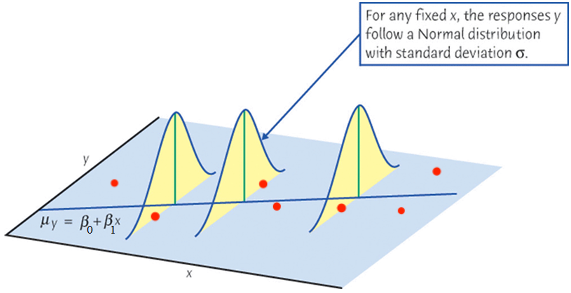

Simple Linear Regression
MATH 4780 / MSSC 5780 Regression Analysis
Dr. Cheng-Han Yu
Department of Mathematical and Statistical Sciences
Marquette University
Department of Mathematical and Statistical Sciences
Marquette University
Model
Simple Linear Regression Model (Population)
- Simple: Only one predictor \(X\).
- Linear: the regression function is linear, i.e., \(f(X) = \beta_0 + \beta_1 X\).
For the \(i\)-th measurement in the target population, \[Y_i = \beta_0 + \beta_1X_i + \epsilon_i\]
- \(Y_i\): the \(i\)-th value of the response (random) variable.
- \(X_i\): the \(i\)-th known fixed value of the predictor.
- \(\epsilon_i\): the \(i\)-th random error with assumption \(\epsilon_i \stackrel{iid}{\sim} N(0, \sigma^2)\).
- \(\beta_0\), \(\beta_1\) and \(\sigma^2\) are fixed unknown parameters to be estimated from the training sample after we collect them.
When we collect data \(\{ (x_1, y_1), (x_2, y_2), \dots, (x_n, y_n)\},\) \(y\) is assumed drawn from a normal distribution. Its value varies around its mean \(\mu_y\).
When we collect data \(\{ (x_1, y_1), (x_2, y_2), \dots, (x_n, y_n)\},\) \(y\) is assumed drawn from a normal distribution. Its value varies around its mean \(\mu_y\).

Conditional Mean of \(Y_i\) given a value of \(X_i\)
\(Y_i = \beta_0 + \beta_1X_i + \epsilon_i\) \(\quad \epsilon_i \stackrel{iid}{\sim} N(0, \sigma^2)\)
For a random variable \(Z\) and a constant \(c \in \mathbf{R}\), \(E(c+Z) = E(c) + E(Z) = c + E(Z)\).
\[\begin{align*} \mu_{Y_i \mid X_i} = E(Y_i \mid X_i) &= E(\beta_0 + \beta_1X_i + \epsilon_i) \\ &= \beta_0 + \beta_1X_i + E(\epsilon_i) \\ &= \beta_0 + \beta_1X_i \end{align*}\]
The mean response of \(Y\), \(\mu_{Y\mid X} = E(Y\mid X)\), has a straight-line relationship with \(X\) given by the population regression line \[\mu_{Y\mid X} = \beta_0 + \beta_1X\]
Conditional Variance of \(Y_i\) given a value of \(X_i\)
\(Y_i = \beta_0 + \beta_1X_i + \epsilon_i\) \(\quad \epsilon_i \stackrel{iid}{\sim} N(0, \sigma^2)\)
For a random variable \(Z\) and a constant \(c \in \mathbf{R}\), \(\mathrm{Var}(c+Z) = \mathrm{Var}(Z)\).

\[\begin{align*} \mathrm{Var}(Y_i \mid X_i) &= \mathrm{Var}(\beta_0 + \beta_1X_i + \epsilon_i) \\ &= \mathrm{Var}(\epsilon_i) = \sigma^2 \end{align*}\] The variance of \(Y\) does not depend on \(X\).
Conditional Distribution of \(Y_i \mid X = x_i\)
\(Y_i = \beta_0 + \beta_1X_i + \epsilon_i\); \(\quad \epsilon_i \stackrel{iid}{\sim} N(0, \sigma^2)\)
For a random variable \(Z \sim N(\mu, \sigma^2)\) and a constant \(c \in \mathbf{R}\), \(c+Z \sim N(c + \mu, \sigma^2)\).
\[\begin{align*} Y_i \mid X_i \stackrel{indep}{\sim} N(\beta_0 + \beta_1X_i, \sigma^2) \end{align*}\] For any fixed value of \(X_i = x\), the response \(Y_i\) varies according to \(N(\mu_{Y_i\mid X_i = x}, \sigma^2)\).
Job: Collect data and estimate the unknown \(\beta_0\), \(\beta_1\) and \(\sigma^2\)!
Parameter Estimation and Model Fitting
Idea of Fitting
- Interested in \(\beta_0\) and \(\beta_1\) in the sample regression model:
\[\begin{align*} y_i &= f(x_i) + \epsilon_i \\ &= \beta_0 + \beta_1~x_{i} + \epsilon_i, \end{align*}\] or
\[E(y_i \mid x_i) = \mu_{y|x_i} = \beta_0 + \beta_1~x_{i}\]
Use sample statistics \(b_0\) and \(b_1\) computed from our sample data to estimate \(\beta_0\) and \(\beta_1\).
\(\hat{y}_{i} = b_0 + b_1~x_{i}\) is called fitted value of \(y_i\), a point estimate of the mean \(\mu_{y|x_i}\) and \(y_i\) itself.
Fitting a Regression Line \(\hat{Y} = b_0 + b_1X\)
Given the training sample \(\{ (x_1, y_1), (x_2, y_2), \dots, (x_n, y_n)\},\)
- Which sample regression line is the best?
- What are the best estimators \(b_0\) and \(b_1\) for \(\beta_0\) and \(\beta_1\)?

What does “best” mean? Ordinary Least Squares (OLS)
Choose the best \(b_0\) and \(b_1\) or the sample regression line minimizing the sum of squared residuals \[SS_{res} = e_1^2 + e_2^2 + \dots + e_n^2 = \sum_{i = 1}^n e_i^2.\]
- The residual \(e_i = y_i - \hat{y}_i = y_i - (b_0 + b_1x_i)\) is a point estimate of \(\epsilon_i\).
- If \(b_0\) and \(b_1\) are the best estimators, plug \(e_i = y_i - (b_0 + b_1x_i)\) into \(SS_{res}\), we have
\[\begin{align} SS_{res} &= (y_1 - b_0 - b_1x_1)^2 + (y_2 - b_0 - b_1x_2)^2 + \dots + (y_n - b_0 - b_1x_n)^2\\ &= \sum_{i=1}^n(y_i - b_0 - b_1x_i)^2 \end{align}\] that is the smallest comparing to any other \(SS_{res} = \sum_{i=1}^n(y_i - a_0 - a_1x_i)^2\) that uses another pair of estimators \((a_0, a_1) \ne (b_0, b_1)\).
Visualizing Residuals

Visualizing Residuals (cont.)

Visualizing Residuals (cont.)

Least Squares Estimates (LSE)
- The least squares approach choose \(b_0\) and \(b_1\) that minimize the \(SS_{res}\), i.e., \[(b_0, b_1) = \arg\min_{\alpha_0, \alpha_1} \sum_{i=1}^n(y_i - \alpha_0 - \alpha_1x_i)^2\]
Take derivative w.r.t. \(\alpha_0\) and \(\alpha_1\), setting both equal to zero: \[\left.\frac{\partial SS_{res}}{\partial\alpha_0}\right\vert_{b_0, b_1} = \left.\sum_{i=1}^n\frac{\partial (y_i - \alpha_0 - \alpha_1x_i)^2}{\partial\alpha_0}\right\vert_{b_0, b_1} = -2 \sum_{i=1}^n(y_i - b_0 - b_1x_i) = 0\] \[\left. \frac{\partial SS_{res}}{\partial\alpha_1}\right\vert_{b_0, b_1} = \left.\sum_{i=1}^n\frac{\partial (y_i - \alpha_0 - \alpha_1x_i)^2}{\partial\alpha_1}\right\vert_{b_0, b_1} = -2 \sum_{i=1}^nx_i(y_i - b_0 - b_1x_i) = 0\] The two equations are called the normal equations.
Least Squares Estimates: Solve for \(\alpha_0\) and \(\alpha_1\)
- Solve for \(\alpha_0\) given \(b_1\):
\[ \color{red}{b_0 = \overline{y} - b_1\overline{x}}\]
- Solve for \(\alpha_1\) given \(\color{red}{b_0 = \overline{y} - b_1\overline{x}}\):
\[\color{red}{b_1 = \frac{\sum_{i=1}^n(x_i - \overline{x})(y_i - \overline{y})}{\sum_{i=1}^n(x_i - \overline{x})^2} = \frac{S_{xy}}{S_{xx}} = r \frac{\sqrt{S_{yy}}}{\sqrt{S_{xx}}}},\] where \(S_{xx} = \sum_{i=1}^n(x_i - \overline{x})^2\), \(S_{yy} = \sum_{i=1}^n(y_i - \overline{y})^2\), \(S_{xy} = \sum_{i=1}^n(x_i - \overline{x})(y_i - \overline{y})\), and \(r\) is the sample correlation coefficient between \(x\) and \(y\).
What can we learn from the formula of \(b_0\) and \(b_1\)?
R Lab Highway MPG hwy vs. Displacement displ
- Data set:
mpginggplot2package.
# A tibble: 234 × 11
manufacturer model displ year cyl trans drv cty hwy fl class
<chr> <chr> <dbl> <int> <int> <chr> <chr> <int> <int> <chr> <chr>
1 audi a4 1.8 1999 4 auto(l5) f 18 29 p compa…
2 audi a4 1.8 1999 4 manual(m5) f 21 29 p compa…
3 audi a4 2 2008 4 manual(m6) f 20 31 p compa…
4 audi a4 2 2008 4 auto(av) f 21 30 p compa…
5 audi a4 2.8 1999 6 auto(l5) f 16 26 p compa…
6 audi a4 2.8 1999 6 manual(m5) f 18 26 p compa…
# ℹ 228 more rowsR Lab Scatter Plot

R Lab Fit Simple Linear Regression
Call:
lm(formula = hwy ~ displ, data = mpg)
Coefficients:
(Intercept) displ
35.70 -3.53 [1] "list"(Intercept) displ
35.70 -3.53 \(\widehat{hwy}_{i} = b_0 + b_1 \times displ_{i} = 35.698 -3.531 \times displ_{i}\)
\(b_1\): For one unit (litre) increase of the displacement, we expect the highway MPG to be decreased, on average, by 3.5 miles.
R Lab Fitted Values
[1] "coefficients" "residuals" "effects" "rank"
[5] "fitted.values" "assign" "qr" "df.residual"
[9] "xlevels" "call" "terms" "model" [1] 29 29 31 30 26 1 2 3 4 5
29.3 29.3 28.6 28.6 25.8 [1] 1.8 1.8 2.0 2.0 2.8[1] 234R Lab Add a Regression Line

Properties of Least Squares Fit
Both \(b_0\) and \(b_1\) are linear combinations of \(y_1, \dots, y_n\).
- \(S_{xy} = \sum_{i=1}^n(x_i - \overline{x})(y_i - \overline{y}) = \sum_{i=1}^n(x_i - \overline{x})y_i\) \[b_1 = \frac{S_{xy}}{S_{xx}} = \frac{\sum_{i=1}^n(x_i - \overline{x})y_i}{\sum_{i=1}^n(x_i - \overline{x})^2} = \sum_{i=1}^nc_iy_i,\] where \(c_i = \frac{(x_i - \overline{x})}{S_{xx}}\).
- \(\sum_{i=1}^n c_i = ?\)
- \(\sum_{i=1}^n c_ix_i = ?\)
Properties of Least Squares Fit
Therefore, \(\hat{y}_i\) is a linear combination of \(y_1, \dots, y_n\)!
- \(b_0 = \overline{y} - b_1~\overline{x}\) and \(b_1 = \sum_{j=1}^n c_j y_j\)
\[\begin{align} \hat{y}_i &= b_0 + b_1 ~x_i \\&= \overline{y} - b_1~\overline{x} + x_i\sum_{j=1}^n c_j y_j \\&= \cdots \\&= \sum_{j=1}^nh_{ij}y_j \\&= h_{i1}y_1 + h_{i2}y_2 + \cdots + h_{in}y_n\end{align}\] where \(h_{ij} = \frac{1}{n} + \frac{(x_i-\overline{x})(x_j-\overline{x})}{S_{xx}}.\)
If \(h_{ij}\) is large, the \(j\)th case can have substantial impact on the \(i\)th fitted value.
Properties of Least Squares Fit
Responses \(\{y_i\}_{i=1}^n\) are random variables before we actually collect them. So are \(b_0\) and \(b_1\).
\(b_0\) and \(b_1\) are unbiased estimators for \(\beta_0\) and \(\beta_1\), respectively, i.e., \(E(b_0) = \beta_0\), \(E(b_1) = \beta_1\).
For random variables \(Z_1, \dots, Z_n\) and constants \(c_1, \dots, c_n \in \mathbf{R}\), \(E(c_1Z_1 + \dots +c_nZ_n) = c_1E(Z_1) + \dots + c_nE(Z_n)\)
\[\begin{align*} E(b_1) &= E\left( \sum_{i=1}^n c_iy_i\right) = \sum_{i=1}^n c_i E(y_i) = \sum_{i=1}^n c_i (\beta_0+\beta_1x_i) \\ &= \beta_0 \sum_{i=1}^n c_i+ \beta_1\sum_{i=1}^n c_ix_i = \beta_1 \end{align*}\]
Properties of Least Squares Fit
- Gauss-Markov Theorem: \(b_0\) and \(b_1\) are best linear unbiased estimators (BLUEs).
- Linear : linear combinations of \(y_i\)
- Unbiased : \(E(b_0) = \beta_0\), \(E(b_1) = \beta_1\)
- Best : minimum variance ‼️
For independent random variables \(Z_1, \dots, Z_n\) and constants \(c_1, \dots, c_n \in \mathbf{R}\), \(\mathrm{Var}(c_1Z_1 + \dots +c_nZ_n) = c_1^2\mathrm{Var}(Z_1) + \dots + c_n^2\mathrm{Var}(Z_n)\)
\[\begin{align*} \mathrm{Var}(b_1) &= \mathrm{Var}\left( \sum_{i=1}^n c_iy_i\right) = \sum_{i=1}^n c_i^2 \mathrm{Var}(y_i) = \sigma^2\sum_{i=1}^n c_i^2 = \frac{\sigma^2\sum_{i=1}^n (x_i - \overline{x})^2}{S_{xx}^2} = \frac{\sigma^2}{S_{xx}} \end{align*}\]
- 😎 LSEs are unbiased and have minimum variance when compared with all other unbiased estimators that are linear combo of \(y_i\). 👍 👍
Properties of Least Squares Fit
👉 Sum of residuals is zero.
\[\scriptstyle \sum_{i=1}^n(y_i - \hat{y}_i) = \sum_{i=1}^ne_i = 0\]
👉 The sum of observations \(y_i\) equals the sum of the fitted values \(\hat{y}_i\).
\[\scriptstyle \sum_{i=1}^ny_i = \sum_{i=1}^n\hat{y}_i\]
👉 The LS regression line passes through the centroid of data \((\overline{x}, \overline{y})\).
👉 Inner product of residual and predictor is zero. \[\scriptstyle \sum_{i=1}^nx_ie_i = 0\]
👉 Inner product of residual and fitted value is zero. \[\scriptstyle \sum_{i=1}^n\hat{y}_ie_i = 0\]
Estimation for \(\sigma^2\)
- Think of \(\sigma^2\) as variance around the line or the mean squared error.
- The estimate of \(\sigma^2\), denoted as \(s^2\) computed from the sample data is \[s^2 = \frac{SS_{res}}{n-2} = \frac{\sum_{i=1}^n(y_i - \hat{y}_i)^2}{n-2} = MS_{res}\]
- The estimated variance \(MS_{res}\), called mean squared residual, is often shown in computer output as \(\texttt{MS(Error)}\) or \(\texttt{MS(Residual)}\).
- \(E(MS_{res}) = \sigma^2\), i.e., \(s^2\) is an unbiased estimator for \(\sigma^2\). 👍
Model-dependent estimate of \(\sigma^2\)
- \(s\): the residual standard error or standard error of regression, is a measure of the lack of fit of the regression model to the data.
- If \(\hat{y}_i \approx y_i\), then \(s\) will be small, and the model fits the data well.
- If \(\hat{y}_i\) is far away from \(y_i\), \(s\) may be large, indicating the model does not fit the data well.
R Lab Standard Error of Regression
Call:
lm(formula = hwy ~ displ, data = mpg)
Residuals:
Min 1Q Median 3Q Max
-7.104 -2.165 -0.224 2.059 15.010
Coefficients:
Estimate Std. Error t value Pr(>|t|)
(Intercept) 35.698 0.720 49.5 <2e-16 ***
displ -3.531 0.195 -18.1 <2e-16 ***
---
Signif. codes: 0 '***' 0.001 '**' 0.01 '*' 0.05 '.' 0.1 ' ' 1
Residual standard error: 3.84 on 232 degrees of freedom
Multiple R-squared: 0.587, Adjusted R-squared: 0.585
F-statistic: 329 on 1 and 232 DF, p-value: <2e-16R Lab Standard Error of Regression
[1] "call" "terms" "residuals" "coefficients"
[5] "aliased" "sigma" "df" "r.squared"
[9] "adj.r.squared" "fstatistic" "cov.unscaled" [1] 3.84[1] 3.84Inference
Interval Estimation and Hypothesis Testing
The inference methods requires the model assumptions to be satisfied!
Sampling Distribution of \(b_0\) and \(b_1\)
If \(y_i\) ( given \(x_i\) ) is normally distributed, do \(b_0\) and \(b_1\) follow normal distribution too?
If \(Z_1, \dots, Z_n\) are normal variables and constants \(c_1, \dots, c_n \in \mathbf{R}\), then \(c_1Z_1 + \dots + c_nZ_n\) is also a normal variable.
- \(b_1 \sim N\left(\beta_1, \frac{\sigma^2}{S_{xx}} \right)\); \(\quad b_0 \sim N\left(\beta_0, \sigma^2\left(\frac{1}{n} + \frac{\overline{x}^2}{S_{xx}} \right) \right)\)
- \(\small \frac{b_1 - \beta_1}{\sqrt{\sigma^2/S_{xx}}} \sim N\left(0, 1 \right)\); \(\small \quad \frac{b_0 - \beta_0}{\sqrt{\sigma^2 \left(\frac{1}{n} + \frac{\overline{x}^2}{S_{xx}}\right)}} \sim N\left(0, 1 \right)\)
- \(\small \frac{b_1 - \beta_1}{\sqrt{s^2/S_{xx}}} \sim t_{n-2}\); \(\small \quad \frac{b_0 - \beta_0}{\sqrt{s^2\left(\frac{1}{n} + \frac{\overline{x}^2}{S_{xx}}\right)}} \sim t_{n-2}\)
- \((1-\alpha)100\%\) CI for \(\beta_1\) is \(\small b_1 \pm t_{\alpha/2, n-2}\sqrt{s^2/S_{xx}}\)
- \((1-\alpha)100\%\) CI for \(\beta_0\) is \(\small b_0 \pm t_{\alpha/2, n-2}\sqrt{s^2\left(\frac{1}{n} + \frac{\overline{x}^2}{S_{xx}}\right)}\)
Sampling Distribution of \(S^2\)
- \(\frac{SS_{res}}{\sigma^2} \sim \chi^2_{n-2}\)
- \(\frac{SS_{res}}{n-2} = MS_{res} = S^2 \sim \sigma^2 \frac{\chi^2_{n-2}}{n-2}\)
- \((1-\alpha)100\%\) CI for \(\sigma^2\) is \(\left(\frac{SS_{res}}{\chi^2_{\alpha/2, n-2}}, \frac{SS_{res}}{\chi^2_{1-\alpha/2, n-2}}\right)\)
R Lab Confidence Interval
2.5 % 97.5 %
(Intercept) 34.28 37.12
displ -3.91 -3.15Hypothesis Testing: \(\beta_1\)
- \(H_0: \beta_1 = \beta_1^0 \quad H_1: \beta_1 \ne \beta_1^0\)
- standard error of \(b_1\): \(se(b_1) = \sqrt{\frac{MS_{res}}{S_{xx}}}\)
- Test statistic: \(t_{test} = \frac{b_1 - \color{red}{\beta_1^0}}{se(b_1)} \sim t_{n-2}\) under \(H_0\).
- Reject \(H_0\) in favor of \(H_1\) if
- \(|t_{test}| > t_{\alpha/2, \, n-2}\) (critical value method)
- \(\text{p-value} = 2P(t_{n-2} > |t_{test}|) < \alpha\) (p-value method)
Hypothesis Testing: \(\beta_0\)
- \(H_0: \beta_0 = \beta_0^0 \quad H_1: \beta_0 \ne \beta_0^0\)
- standard error of \(b_0\): \(se(b_0) = \sqrt{MS_{res}\left(1/n + \overline{x}^2/S_{xx}\right)}\)
- Test statistic: \(t_{test} = \frac{b_0 - \color{red}{\beta_0^0}}{se(b_0)} \sim t_{n-2}\) under \(H_0\)
- Reject \(H_0\) in favor of \(H_1\) if
- \(|t_{test}| > t_{\alpha/2, \, n-2}\) (critical value method)
- \(\text{p-value} = 2P(t_{n-2} > |t_{test}|) < \alpha\) (p-value method)
Hypothesis Testing: \(\beta_0\)
- \(H_0: \beta_0 = \beta_0^0 \quad H_1: \beta_0 \ne \beta_0^0\)
- standard error of \(b_0\): \(se(b_0) = \sqrt{MS_{res}\left(1/n + \overline{x}^2/S_{xx}\right)}\)
- Test statistic: \(t_{test} = \frac{b_0 - \color{red}{\beta_0^0}}{se(b_0)} \sim t_{n-2}\) under \(H_0\)
- Reject \(H_0\) in favor of \(H_1\) if
- \(|t_{test}| > t_{\alpha/2, \, n-2}\) (critical value method)
- \(\text{p-value} = 2P(t_{n-2} > |t_{test}|) < \alpha\) (p-value method)
R Lab Testing on \(\beta_0\) and \(\beta_1\)
...
lm(formula = hwy ~ displ, data = mpg)
Residuals:
Min 1Q Median 3Q Max
-7.104 -2.165 -0.224 2.059 15.010
Coefficients:
Estimate Std. Error t value Pr(>|t|)
(Intercept) 35.698 0.720 49.5 <2e-16 ***
displ -3.531 0.195 -18.1 <2e-16 ***
---
Signif. codes: 0 '***' 0.001 '**' 0.01 '*' 0.05 '.' 0.1 ' ' 1
... Estimate Std. Error t value Pr(>|t|)
(Intercept) 35.70 0.720 49.6 2.12e-125
displ -3.53 0.195 -18.2 2.04e-46- Testing \(H_0: \beta_0 = 0\) and \(H_0: \beta_1 = 0\)
Interpretation of Testing Results
- \(H_0: \beta_1 = 0 \quad H_1: \beta_1 \ne 0\)
- Failing to reject \(H_0: \beta_1 = 0\) implies there is no linear relationship between \(Y\) and \(X\).
If we reject \(H_0: \beta_1 = 0\), does it mean \(X\) and \(Y\) are linearly related?
Test of Significance of Regression
-
Rejecting \(H_0: \beta_1 = 0\) could mean
- the straight-line model is adequate
- better results could be obtained with a more complicated model
Analysis of Variance (ANOVA) Approach
\(X\) - \(Y\) Relationship Explains Some Deviation
Suppose we only have data \(Y\) and have no information about \(X\) or no information about the relationship between \(X\) and \(Y\). How do we predict a value of \(Y\)?
Our best guess would be \(\overline{y}\) if the data have no pattern, i.e., \(\hat{y}_i = \overline{y}\).
As we were treating \(X\) and \(Y\) as uncorrelated.
The (total) deviation from the mean is \((y_i - \overline{y})\).
If \(X\) and \(Y\) are linearly related, fitting a linear regression helps us predict the value of \(Y\) when the value of \(X\) is provided.
\(\hat{y}_i = b_0 + b_1x_i\) is closer to \(y_i\) than \(\overline{y}\).
The regression model explains some deviation of \(y\).
Partition of Deviation
Total deviation = Deviation explained by regression + Unexplained deviation
\((y_i - \overline{y}) = (\hat{y}_i - \overline{y}) + (y_i - \hat{y}_i)\)
\((19 - 9) = (13 - 9) + (19 - 13)\)
Sum of Squares (SS)
- \(\sum_{i=1}^n(y_i - \overline{y})^2 = \sum_{i=1}^n(\hat{y}_i - \overline{y})^2 + \sum_{i=1}^n(y_i - \hat{y}_i)^2\)
- Total SS \((SS_T)\) = Regression SS \((SS_R)\) + Residual SS \((SS_{res})\)
- \(df_T = df_R + df_{res}\)
- \(\color{blue}{(n-1) = 1 +(n-2)}\)
- \(df_T = n - 1\): lose 1 df with constraint \(\sum_{i=1}^n(y_i - \overline{y}) = 0\)
- \(df_R = 1\): all \(\hat{y}_i\) are on the regression line with 2 dfs (intercept and slope), but with constraint \(\sum_{i=1}^n(\hat{y}_i - \overline{y}) = 0\)
- \(df_{res} = n - 2\): lose 2 dfs because \(\beta_0\) and \(\beta_1\) are estimated by \(b_0\) and \(b_1\), which are linear combo of \(y_i\)
ANOVA for Testing Significance of Regression
- A larger value of \(F_{test}\) indicates that regression is significant.
- Reject \(H_0\) if
- \(F_{test} > F_{\alpha, 1, n-2}\)
- \(\text{p-value} = P(F_{1, n-2} > F_{test}) < \alpha\).
- The ANOVA is designed to test \(H_0\) that all predictors have no value in predicting \(y\).
- In SLR, the \(F\)-test gives the same result as a two-sided \(t\)-test of \(H_0: \beta_1=0\).
What is the \(H_0\) of ANOVA \(F\)-test if there are \(k \ge 2\) predictors?
R Lab ANOVA Table
Analysis of Variance Table
Response: hwy
Df Sum Sq Mean Sq F value Pr(>F)
displ 1 4848 4848 329 <2e-16 ***
Residuals 232 3414 15
---
Signif. codes: 0 '***' 0.001 '**' 0.01 '*' 0.05 '.' 0.1 ' ' 1Coefficient of Determination
The coefficient of determination \((R^2)\) is the proportion of the variation in \(y\) that is explained by the regression model: \[R^2 = \frac{SS_R}{SS_T} =\frac{SS_T - SS_{res}}{SS_T} = 1 - \frac{SS_{res}}{SS_T}\]
\(R^2\) as the proportionate reduction of total variation associated with the use of \(X\).
(a) \(\hat{y}_i = y_i\) and \(\small SS_{res} = \sum_{i=1}^n(y_i - \hat{y}_i)^2 = 0\). (b) \(\hat{y}_i = \overline{y}\) and \(\small SS_R = \sum_{i=1}^n(\hat{y}_i - \overline{y})^2 = 0\).
R Lab \(R^2\)
...
Estimate Std. Error t value Pr(>|t|)
(Intercept) 35.698 0.720 49.5 <2e-16 ***
displ -3.531 0.195 -18.1 <2e-16 ***
---
Signif. codes: 0 '***' 0.001 '**' 0.01 '*' 0.05 '.' 0.1 ' ' 1
Residual standard error: 3.84 on 232 degrees of freedom
Multiple R-squared: 0.587, Adjusted R-squared: 0.585
F-statistic: 329 on 1 and 232 DF, p-value: <2e-16
...Prediction
Predicting the Mean Response: Sampling Distribution
-
With predictor value \(x = x_0\), we want to estimate the mean response \[E(y\mid x_0) = \mu_{y|x_0} = \beta_0 + \beta_1 x_0\].
- The mean highway MPG \(E(y \mid x_0)\) when displacement is \(x = x_0 = 5.5\).
If \(x_0\) is within the range of \(x\), an unbiased point estimate of \(E(y\mid x_0)\) is \[\widehat{E(y\mid x_0)} = \hat{\mu}_{y | x_0} = b_0 + b_1 x_0\]
The sampling distribution of \(\hat{\mu}_{y | x_0}\) is \[N\left( \mu_{y | x_0} = \beta_0 + \beta_1 x_0, \sigma^2\left(\frac{1}{n} + \frac{(x_0 - \overline{x})^2}{S_{xx}} \right) \right)\]
Predicting the Mean Response: Confidence Interval
\((\hat{\mu}_{y | x_0} = b_0 + b_1 x_0) \sim N\left( \mu_{y | x_0} = \beta_0 + \beta_1 x_0, \sigma^2\left(\frac{1}{n} + \frac{(x_0 - \overline{x})^2}{S_{xx}} \right) \right)\)
\[\frac{(b_0 + b_1 x_0) - (\beta_0 + \beta_1 x_0)}{\sigma\sqrt{\frac{1}{n} + \frac{(x_0 - \overline{x})^2}{S_{xx}}}} \sim N(0, 1)\]
\[\frac{(b_0 + b_1 x_0) - (\beta_0 + \beta_1 x_0)}{s\sqrt{\frac{1}{n} + \frac{(x_0 - \overline{x})^2}{S_{xx}}}} \sim t_{n-2}\]
The \((1-\alpha)100\%\) CI for \(E(y\mid x_0)\) is \(\boxed{\hat{\mu}_{y | x_0} \pm t_{\alpha/2, n-2} s\sqrt{\frac{1}{n} + \frac{(x_0 - \overline{x})^2}{S_{xx}}}}\).
Does the length of the CI for \(E(y\mid x_0)\) stay the same at any location of \(x_0\)?
Predicting New Observations: Sampling Distribution
- Predict the value of a new observation \(y_0\) with \(x = x_0\).
- The highway MPG of a car \(y_0(x_0)\) when its displacement is \(x = x_0 = 5.5\).
- An unbiased point estimate of \(y_0(x_0)\) is \[\hat{y}_0(x_0) = b_0 + b_1 x_0\]
What is the sampling distribution of \(\hat{y}_0\)?
- \(\hat{y}_0 = b_0 + b_1 x_0 \sim N\left(\beta_0 + \beta_1 x_0, \sigma^2\left(\frac{1}{n} + \frac{(x_0 - \overline{x})^2}{S_{xx}} \right) \right)\)
What is the distribution of \(y_0 = \beta_0 + \beta_1x_0 + \epsilon\)?
- \(y_0 \sim N\left(\beta_0 + \beta_1 x_0, \sigma^2 \right)\)
What is the distribution of \(y_0 - \hat{y}_0\)?
Predicting New Observations: Prediction Interval
- \(y_0 - \hat{y}_0 \sim N\left(0, \sigma^2\left(1 + \frac{1}{n} + \frac{(x_0 - \overline{x})^2}{S_{xx}} \right) \right)\)
\[\frac{(y_0 - \hat{y}_0) - \color{red}{0}}{\sigma\sqrt{1 + \frac{1}{n} + \frac{(x_0 - \overline{x})^2}{S_{xx}}}} \sim N(0, 1)\]
\[\frac{y_0 - \hat{y}_0}{s\sqrt{1 + \frac{1}{n} + \frac{(x_0 - \overline{x})^2}{S_{xx}}}} \sim t_{n-2}\]
The \((1-\alpha)100\%\) prediction interval (PI) for \(y_0(x_0)\) is \(\small \boxed{\hat{y_0} \pm t_{\alpha/2, n-2} s\sqrt{1+ \frac{1}{n} + \frac{(x_0 - \overline{x})^2}{S_{xx}}}}\)
What is the difference between CI for \(E(y\mid x_0)\) and PI for \(y_0(x_0)\)?
- The PI is wider as it includes the uncertainty about \(b_0\), \(b_1\) as well as \(y_0\) due to error \(\epsilon\).
R Lab Prediction
## CI for the mean response
predict(reg_fit, newdata = data.frame(displ = 5.5), interval = "confidence", level = 0.95) fit lwr upr
1 16.3 15.4 17.2## PI for the new observation
predict(reg_fit, newdata = data.frame(displ = 5.5), interval = "predict", level = 0.95) fit lwr upr
1 16.3 8.67 23.9

Considerations in the Usage of Regression
Considerations in Regression: Extrapolation
- Regression models are intended as interpolation equations over the range of the regressors used to fit the model.


Considerations in the Use of Regression: Outliers
- Outlier: An observation that is considerably different from the rest of the data (unusual in \(y\) direction)

Considerations in Regression: Influential Points
- Influential point: A point that strongly affects the slope of the line. (unusual in \(x\) direction)

Considerations in Regression: Causal Relationship?


Considerations in Regression: Unknown Predictor
- Maximum daily load \((Y)\) on an electric power generation system and the maximum daily temperature \((X)\).
- To predict tomorrow maximum daily load, we must first know tomorrow maximum temperature.
- The prediction of maximum load is conditional on the temperature forecast.
Maximum Likelihood Estimation (MLE)*
Likelihood Function
- Maximum likelihood estimation is a method of finding point estimators.
- Suppose \(y_i \stackrel{iid}{\sim} f(y|\theta)\)
- The joint probability function of the data \((y_1, y_2, \dots, y_n)\) is \[f(y_1, y_2, \dots, y_n|\theta) = \prod_{i = 1}^nf(y_i|\theta)\]
- When the function is viewed as a function of \(\theta\), with the data given, it is called the likelihood function \(L(\theta|{\bf y} = (y_1, y_2, \dots, y_n))\): \[L(\theta|{\bf y}) = \prod_{i = 1}^nf(y_i|\theta)\]
- \(L(\theta|{\bf y})\) is not a probability or density function.
Likelihood Function
- For easier calculation and computation, we work with the log-likelihood function \[\ell(\theta|{\bf y}) := \log L(\theta|{\bf y})\]
Example: Maximum Likelihood Estimation
- Maximizing \(L(\theta)\) with respect to \(\theta\) yields the maximum likelihood estimator of \(\theta\), i.e., \[\hat{\theta}_{ML} = \underset{\theta}{\arg \max} L(\theta) = \underset{\theta}{\arg \max} \log L(\theta)\]
- Intuition: Given the data \((y_1, y_2, \dots, y_n)\), we are finding a value of parameter \(\theta\) so that the given data set is most likely to be sampled.
- Example: Suppose \(Y_1, Y_2, \dots, Y_n \stackrel{iid}{\sim} Bernoulli(\theta)\), where \(\theta\), the probability of success, is the unknown parameter to be estimated.
What is the Bernoulli distribution?
- The probability function of \(Y_i\) is \(P(Y_i = y_i) = f(y_i) = \theta^{y_i}(1-\theta)^{1-y_i}\) for \(y_i=0, 1\). \[L(\theta) = \prod_{i = 1}^nf(y_i|\theta) = \prod_{i = 1}^n\theta^{y_i}(1-\theta)^{1-y_i} = \theta^{\sum_{i=1}^ny_i}(1-\theta)^{n-\sum_{i=1}^ny_i}\]
Example: Maximum Likelihood Estimation
\[L(\theta) = \prod_{i = 1}^nf(y_i|\theta) = \prod_{i = 1}^n\theta^{y_i}(1-\theta)^{1-y_i} = \theta^{\sum_{i=1}^ny_i}(1-\theta)^{n-\sum_{i=1}^ny_i}\]
-
Suppose \(n = 20\) and \(\sum_{i=1}^{20}y_i = 12\) from the sample data
- \(L(\theta) = \theta^{12}(1-\theta)^{8}\)
- \(\log L(\theta) = 12 \log(\theta)+8\log(1-\theta)\)
Fist order condition: \(\frac{d \, \log L(\theta)}{d \, \theta} = \frac{12}{\theta} - \frac{8}{1-\theta} = 0\).
\(\hat{\theta}_{ML} = 12/20 = 0.6\).
- Given \(n = 20\) and \(\sum_{i=1}^{20}y_i = 12\), \(\hat{\theta}_{ML} = 12/20 = 0.6\) makes the data most possible.
Example: Maximum Likelihood Estimation
- The estimated probability of successes \(\hat{\theta}_{ML}\) is the sample proportion of successes \(\frac{\sum_{i=1}^n y_i}{n} = \frac{12}{20}\).
Linear Regression: Estimation by Maximum Likelihood
- \(Y_i = \beta_0 + \beta_1X_i + \epsilon_i\) with \(\epsilon_i \stackrel{iid}{\sim} N(0, \sigma^2)\). This means \(Y_i \stackrel{iid}{\sim} N(\beta_0 + \beta_1X_i, \sigma^2)\)
- Given data \(\{(x_i, y_i)\}_{i=1}^n\), \[\small L(\beta_0, \beta_1, \sigma^2 \mid \{(x_i, y_i)\}_{i=1}^n) = \prod_{i=1}^nN(y_i \mid \beta_0 + \beta_1x_i, \sigma^2)\] \[\begin{align} \small \ell(\beta_0, \beta_1, \sigma^2 \mid \{(x_i, y_i)\}_{i=1}^n) \small &= \sum_{i=1}^n\log N(y_i \mid \beta_0 + \beta_1x_i, \sigma^2) \\ \end{align}\]
\[\begin{align} \small \quad \quad \left.\frac{\partial \ell}{\partial\beta_0}\right\vert_{\tilde{\beta}_0, \tilde{\beta}_1, \tilde{\sigma}^2} & = 0\\ \small \quad \quad \left. \frac{\partial \ell}{\partial\beta_1}\right\vert_{\tilde{\beta}_0, \tilde{\beta}_1, \tilde{\sigma}^2} &= 0\\ \small \quad \quad \left. \frac{\partial \ell}{\partial\sigma^2}\right\vert_{\tilde{\beta}_0, \tilde{\beta}_1, \tilde{\sigma}^2} &= 0 \end{align}\]
Estimation by Maximum Likelihood
- \(\color{red}{\tilde{\beta}_0 = \overline{y} - \tilde{\beta}_1\overline{x}} = b_0\)
- \(\color{red}{\tilde{\beta}_1 = \frac{\sum_{i=1}^n(x_i - \overline{x})y_i}{\sum_{i=1}^n(x_i - \overline{x})^2}} = b_1\)
- \(\color{red}{\tilde{\sigma}^2 = \frac{\sum_{i=1}^n(y_i - \tilde{\beta}_0 - \tilde{\beta}_1x_i)^2}{n}}\)
- The MLE of \(\sigma^2\) is biased.
- In general, MLE have better statistical properties than LSE.
- MLE requires a full distributional assumption whereas LSE does not.